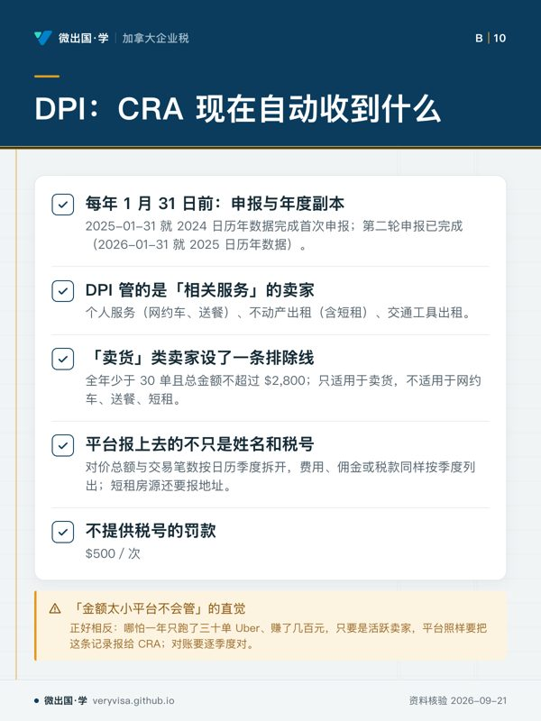
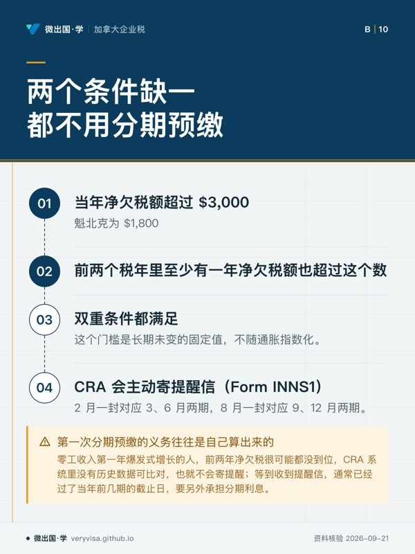
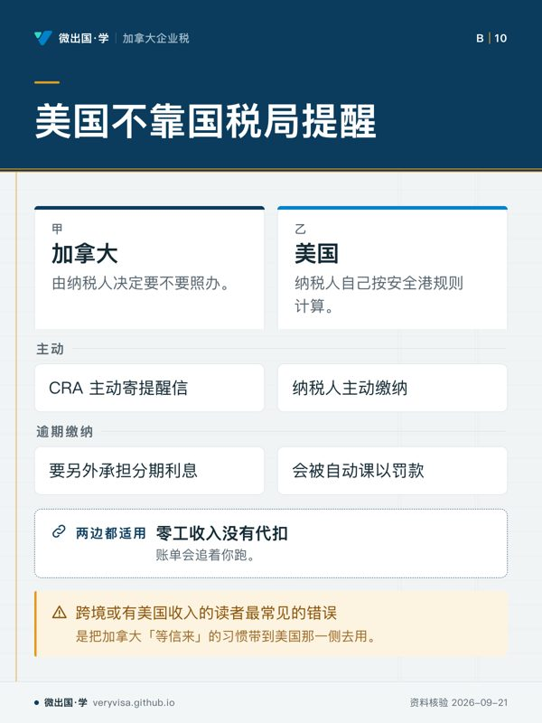

🃏 Flashcards · 3 闪卡 · 3 张 🖼 Slides · 4 幻灯 · 4 页 ✍️ Questions · 7 刷题 · 7 道
自雇与小生意 Self-employment and small business P2 稳住 P2 Hold steady
ZH EN ZH + EN
先看这一章怎么考 First, how this chapter is tested
情景定性题：给出网约车、纯送餐、混合接单或短租的业务组合，要求判断适用的所得税申报表（Form T2125 还是 Form T776）、主营业务 NAICS 代码，或首元即须登记 GST/HST 还是适用 $30,000 小供应商门槛，真正考的是按「服务性质与附加服务」而非「是否使用平台」分类。 Scenario classification questions: given a combination of ridesharing, pure food delivery, mixed gigs or short-term rentals, you decide which income tax form applies (Form T2125 or Form T776), the main business NAICS code, or whether GST/HST registration is required from the first dollar or the $30,000 small supplier threshold applies; what is really tested is classification by "the nature of the service and any additional services", not by "whether a platform is used". 门槛触发与生效日判定题：给出某日历季度突增的大额配送合同或连续四季度滚动收入数据，要求指出失去小供应商身份的确切时点及哪一笔收入开始计征 GST/HST，真正考的是单季触发（越线当笔立即生效）与四季累计触发（超标季末次月月底失效）两条路径的差异。 Threshold trigger and effective date questions: given a large delivery contract that appears in one calendar quarter or rolling income over four consecutive quarters, you identify the exact point at which small supplier status is lost and which income starts to bear GST/HST; what is really tested is the difference between the single-quarter trigger (effective at once on the transaction that crosses the line) and the four-quarter cumulative trigger (effective at the end of the month after the quarter in which the line is crossed). 平台申报规则（DPI）辨析题：设计低单量零工卖家或未提供税号的场景，测试是否误用「30 单且 $2,800」卖货排除线，以及不提供税号的 $500 罚款打在谁身上，真正考的是《所得税法》Part XX 的覆盖范围与信息对账逻辑。 Platform reporting rules (DPI) questions: scenarios with a low-volume gig seller or one who gives no tax number test whether you wrongly apply the "30 transactions and $2,800" goods exclusion, and on whom the $500 penalty for not providing a tax number falls; what is really tested is the coverage of Part XX of the Income Tax Act and the logic of reconciling information. 最常丢分的陷阱（看到题干信号就警觉） Traps that cost the most marks (watch for the signal in the stem)
网约车误套小供应商豁免 Applying the small supplier exemption to ridesharing 题干出现 commercial ridesharing、passenger transport、或者「网约车载客兼做送餐」且年收入低于 $30,000。 The stem has commercial ridesharing, passenger transport, or "ridesharing passengers plus food delivery" with annual income under $30,000. 只记四季累计、漏看单季越线 Remembering only the four-quarter total and missing a single-quarter breach 题干强调某单一季度（如 Q3）因接下团体配送合同或临时大单导致当季收入突破 $30,000。 The stem stresses that in a single quarter (such as Q3), taking on a group delivery contract or a temporary large order pushes the quarter's income past $30,000. 服务类卖家误套卖货排除线 Applying the goods exclusion to service sellers 题干描述兼职网约车司机、送餐员或短租房东全年单量少于 30 单、收入仅数百元，问平台是否向 CRA 申报。 The stem describes a part-time rideshare driver, delivery worker or short-term rental host with fewer than 30 transactions in the year and income of only a few hundred dollars, and asks whether the platform reports to the CRA. 本章考点页：导图、要点表、7 道带逐项解析的练习 →
核实日期：2026-10-30｜现行口径：2026 税年（2027 年春申报）｜复核：2027-01-31（本页含逐年变动的 CPP 与门槛数字）。
数值一律指向加拿大税务局 (Canada Revenue Agency, CRA) 现行页面；法条依据指向《所得税法》(Income Tax Act, ITA) 现行合订本。
开网约车、送外卖、在家里出租一个房间——这三件事在 CRA 眼里有一个共同点：收入来自一个应用或网站撮合的交易，而税务上的雇员或自雇身份仍须按实际合同与工作关系判断，不能仅凭通过平台接单决定。这一页帮你分清网约车或送餐收入哪种情况必须从第一元起 登记 GST/HST、哪种情况有 $30,000 的缓冲，看懂 2024 年起生效的平台经济申报规则 让 CRA 现在怎么知道你挣了多少，并算清楚要为 CPP 与分期预缴单独留出多少现金，免得报税那天才发现一笔意外账单。
一、制度设计与底层逻辑：为什么零工收入的税这么难代扣 本节回答 This section answers 为何零工填T2125无代扣，及拒交税号罚款 Why gig workers file T2125 with no withholding, and the penalty for refusing to give a tax number
1.1 独立合同工，不是雇员
无论网约车平台把司机叫「合作伙伴 (partner)」还是把送餐员叫「独立配送员」，在税法上他们通常被认定为自雇的独立合同工 (self-employed independent contractor) （最终仍按实际工作关系判断）。这不是平台的商业措辞问题，而是有法律后果的分类：判定标准围绕控制程度、是否自带工具（自己的车、自己的手机）、是否承担经营风险、能否同时接多个平台的单等一组事实展开。平台把司机称作「合作伙伴」并不构成税法意义上的合伙关系，也不会因此让司机变成雇员——称呼不改变事实上的工作关系。
这个身份判定决定了收入怎么报：不是 T4 工资单，而是 Form T2125，商业或专业活动收支表 (Statement of Business or Professional Activities) 。T2125 的完整填法在 ca-business-01-t2125-self-employment 已经写过，本页只讲零工经济这一类收入特有的部分。
1.2 没有雇主，就没有代扣——这是整个制度设计的起点
雇员的所得税、CPP、EI 由雇主在发薪时代扣代缴，国库拿到钱的时点几乎与收入发生的时点同步。自雇者没有这一层：平台按合同支付全额报酬（GST/HST 除外，见第二节），所得税、CPP 供款、有时还有 GST/HST 的净额，全部由个人在报税季或分期预缴时一次性或分批补上。这不是疏漏，是自雇这种法律关系本身决定的 ——没有雇佣关系就没有代扣义务人。
后果是零工经济从业者面对的现金流形态与工资收入者完全不同：工资到手的数字已经是税后净额；零工收入到手的数字往往只扣掉了平台服务费，所得税、CPP、GST/HST 全部还没扣。把到手的钱当净收入花掉，是零工从业者最普遍也最容易被忽视的错误 ，第七节会具体展开。
1.3 谁与谁在博弈：从「查得到才罚」到「平台先一步报给你」
在 2024 年之前，CRA 掌握零工经济收入的手段主要是事后稽查——比对银行存款、约谈、第三方线索。这种方式成本高、滞后，而且只能覆盖被抽中的一小部分人。平台经济申报规则 (Reporting Rules for Digital Platform Operators, 以下简称 DPI) 把这个逻辑倒过来：让平台像雇主报 T4、银行报 T5 那样，在报税季之前就把卖家的收入数据交给 CRA （CRA ）。
这条规则脱胎于经济合作与发展组织 (OECD) 的平台经济申报示范规则，2023 年 6 月 22 日在加拿大御准立法，落在《所得税法》Part XX（CRA ）。它不是加拿大自己发明的制度 ，而是与其他签约辖区互认数据的一部分——这也是为什么它管的是「平台运营方」的申报义务，而不是直接向卖家收税：平台变成了信息中介，真正的纳税义务人还是卖家本人，只是卖家这一侧的收入现在有了一份平台自己交上去的对照本。
1.4 错报的法律后果
未如实申报零工收入，适用与其他自雇者相同的漏报处罚与利息 ；DPI 生效后，CRA 手上多了一份可以直接比对的第三方数据，被抓到不一致的概率结构性上升。
不向平台提供税号 (tax identification number)，CRA 可以对卖家本人处以每次 $500 的罚款 （CRA ）——这个罚款打在卖家身上，不是平台身上。历史上没申报过平台收入的，官方指向的路径是自愿披露计划 (Voluntary Disclosures Program) ，而不是等着被动核查（CRA ）。
ℹ️
DPI 不是新税种，是新的信息渠道
很多人第一次听说 DPI 会误以为「平台经济开始被单独征税了」。不是。 零工收入该怎么报、按什么税率课税，规则一分未变；变的只是 CRA 现在有了一份不经过你就能拿到的数据副本。把它当成「多了一双眼睛」比「多了一种税」更接近事实。
节末检索小测 · 先别往回翻，凭记忆作答 Quick recall check: answer from memory before scrolling back
Marcus drives for a passenger ridesharing app that refers to its drivers as 'partners' in its marketing materials. He uses his own car, chooses his own hours, and can accept trips on competing apps. When the platform requests his tax identification number (TIN) for digital platform reporting, Marcus refuses to provide it twice. How is Marcus classified for tax purposes, and who faces the statutory penalty for the missing TIN?
马库斯在一家网约车应用接单，该平台在宣传材料中将司机称为「合作伙伴」。他使用自己的汽车、自主安排出车时间，并可同时在竞争平台接单。当平台为履行数字平台申报规则要求他提供税号（TIN）时，马库斯两次拒绝提供。马库斯在税法上应如何定性？未提供税号的法定罚款由谁承担？
a He is a partner in a tax partnership and the platform operator is fined $500 per failure. ✗ 错误。平台将司机称为「合作伙伴（partner）」只是商业措辞，不构成税法意义上的合伙关系（partnership），且拒不提供税号（tax identification number, TIN）的 $500 罚款打在卖家本人身上而非平台身上。 Wrong. The platform calling drivers "partners" is only commercial wording and does not create a partnership in the tax-law sense, and the $500 penalty for refusing to provide a tax identification number (TIN) falls on the seller personally, not on the platform.
b He is a self-employed independent contractor filing Form T2125, and he personally faces a $500 penalty for each failure to provide his TIN. ✓ 正确。按实际控制程度、自备工具和承担经营风险等事实，他属于自雇独立合同工（self-employed independent contractor），应填报商业或专业活动收支表（Form T2125）；在平台经济申报规则（Reporting Rules for Digital Platform Operators, DPI）下，卖家不向平台提供税号（tax identification number, TIN），CRA 可对卖家本人处以每次 $500 的罚款。 Correct. Based on facts such as actual degree of control, own tools and bearing business risk, he is a self-employed independent contractor and should report on the statement of business or professional activities (Form T2125); under the Reporting Rules for Digital Platform Operators (DPI), if a seller does not give the platform a tax identification number (TIN), the CRA may penalize the seller personally $500 each time.
c He is an employee receiving a T4 slip because the app sets the fare, and no TIN penalty applies until CRA audits him. ✗ 错误。自带车辆、自主决定时间并可跨平台接单通常定性为自雇独立合同工（independent contractor），不会收到 T4 工资单；且不向平台提供税号的每次 $500 罚款直接适用，不以事后稽查为前提。 Wrong. Supplying one's own vehicle, setting one's own time and being able to accept orders across platforms is generally classified as a self-employed independent contractor, who does not receive a T4 slip; and the $500 penalty per instance for not giving the platform a tax number applies directly and does not depend on a later audit.
d He is a self-employed independent contractor, but the DPI rules impose a 15% withholding tax instead of a flat dollar penalty when a TIN is missing. ✗ 错误。DPI 规则并非新税种，也没有要求平台代扣代缴所得税；卖家拒绝提供税号的法定后果是针对卖家本人每次 $500 的定额罚款。 Wrong. The DPI rules are not a new tax and do not require platforms to withhold income tax; the statutory consequence of a seller refusing to give a tax number is a fixed $500 penalty each time against the seller personally.
看答案与每个选项的解析 Show the answer and why each option is right or wrong 答案 Answer ：b
二、2026 税年现行规则与数字 本节回答 This section answers 三类服务GST门槛、DPI范围、CPP与预缴门槛 The GST thresholds for three kinds of service, the DPI scope, and the CPP and instalment thresholds 本章考题 1 Question 1 本章考题 2 Question 2 本章考题 3 Question 3 本章考题 4 Question 4
2.1 三种平台，三套 GST/HST 规则
零工经济里最容易搞混的一点是：GST/HST 的登记门槛不是按「有没有用平台」判断，而是按提供的服务类型判断 ——这条分野从 2017 年起一直没变（CRA ）。
图：三种平台，三套 GST/HST 规则——登记门槛按服务类型判断
网约车之所以没有门槛，是因为出租车行业本来就没有小供应商豁免，而 2017 年联邦预算专门修改了《消费税法》s.123(1) 的「出租车业务」(taxi business) 定义，把经电子平台撮合的商业性载客服务明文写进去，2017 年 7 月 1 日起生效——网约车是被立法并入出租车那条老规则的（CRA ）。无论 2024、2025 还是 2026 税年，这条分野都没有变过。
真正的考点在小供应商门槛的触发路径 ，而不是门槛数字本身：
单季触发 ：某个日历季度里，单笔或累计供应额超过 $30,000——从使你超过的那一笔供应起 就要收税，注册生效日不得晚于那一天，没有缓冲期。四季累计触发 ：连续四个（或更少）日历季度累计超过但单季没有超过——在超过所在季度结束后的下一个月末 失去小供应商身份。
大多数送餐员只记得第二条 ，撞上第一条（比如接了一笔异常大额的团体订单或临时合同）时往往已经漏收了税——这是本页第七节要重点提醒的错报形态之一。
2.2 平台经济申报规则（DPI）：CRA 现在自动收到什么
很多 2024 年前后写成的资料还停在「从 2024 年起平台将要申报」的将来时；到 2026 税年，这套机制已经完整跑了两个申报周期，早已是常态，不是新闻。
DPI 管的是「相关服务 (relevant service)」的卖家，具体包括个人服务（网约车、送餐）、不动产出租（含短租）、交通工具出租。它对「卖货」类卖家设了一条排除线——全年少于 30 单且总金额不超过 $2,800 的卖货者可以被排除 ——但这条排除线只适用于卖货，不适用于网约车、送餐、短租这三类 （CRA ）。也就是说，哪怕一年只跑了三十单 Uber、赚了几百元，只要是活跃卖家 (active seller)，平台照样要把这条记录报给 CRA。这与「金额太小平台不会管」的直觉正好相反 ，是本页最容易被误解的一点。
卖家这一侧的义务很简单：把要求的信息（含税号）配合提供给平台；配合完成之后，DPI 规则下卖家没有别的动作，也不会因此减少或改变自己原有的报税义务 （CRA ）。真正该做的是：拿到平台每年 1 月 31 日前寄来的年度副本后，核对它与自己台账是否一致 ——第三节会展开这一步怎么做。
平台报上去的也不只是姓名和税号：每位卖家在申报期内收到的对价总额与交易笔数按日历季度拆开 ，平台扣收的费用、佣金或税款同样按季度列出；短租房源还要报地址，平台掌握的话还报出租天数与房源类型。所以对账要逐季度对，只对全年总额，差额出在哪个季度就查不出来。
2.3 自雇者的 CPP：两层供款，且要交双份
CPP 供款分两层——一般层与 2024 年新增的 CPP2 增强层——雇员各交一半，自雇者两份都要自己交 ：
一般层的算法是 (YMPE − 基本免税额 $3,500) × 5.95% ，自雇者按这个结果的两倍缴纳。$3,500 这个免税额自 1997 年冻结至今，随着 YMPE 逐年上升，它在总收入中的占比逐年缩小——这是一个「冻结值本身也是一种隐形加税」的例子 ，读讲解页时值得留意，但不影响算法本身。
这笔供款不是整笔都能抵税。 一般层供款拆成两半：一半进 line 22200 作为所得扣除，另一半进 line 31000 作为不可退还税收抵免；2019 年 CPP 增强之后新增的部分（含 CPP2 全部）则全额 作为所得扣除（CRA（论坛解读） ）。抵免与扣除的税务价值不一样——扣除按边际税率抵税，抵免只按最低税率抵税——所以自雇者账上看到的 CPP 总供款数字，不能整笔当扣除项去算净收入 ，真实的现金流出比「少交一笔税」听起来的直觉要多。
2.4 分期预缴：零工收入没有代扣，账单会追着你跑
个人所得税分期预缴的触发条件是双重条件都满足 （CRA（论坛解读） ）：
当年净欠税额超过 $3,000 （魁北克为 $1,800）；且
前两个税年（本页语境即 2024 或 2025）里至少有一年净欠税额也超过这个数。
两个条件缺一都不用分期预缴。这个门槛是长期未变的固定值，不随通胀指数化 （CRA（论坛解读） ）。CRA 会主动寄提醒信（Form INNS1）——2 月一封对应 3、6 月两期，8 月一封对应 9、12 月两期——零工收入第一年爆发式增长的人，前两年净欠税都没到 $3,000，第一年其实不必分期预缴 ，但要在次年 4 月 30 日一次缴清一大笔欠税。真正的坑在第二年：上一年已经超线，只要第二年也超线就必须预缴。这一年 CRA 会按往年数据寄提醒信，2 月那封所依据的是两年前的低欠税，3、6 月建议额可能很低甚至是零，9、12 月才补上；照提醒信金额按期缴（「免计算」选项）就不会被收分期利息 ，自己少缴或晚缴才会。
与美国的对照值得一提：加拿大是 CRA 主动寄提醒信、由纳税人决定要不要照办；美国是纳税人自己按安全港规则计算并主动缴纳，逾期缴纳会被自动课以罚款，不靠国税局提醒。跨境或有美国收入的读者最常见的错误，是把加拿大「等信来」的习惯带到美国那一侧去用。
节末检索小测 · 先别往回翻，凭记忆作答 Quick recall check: answer from memory before scrolling back
Nadia left her salaried job at the end of 2025 to become a full-time independent delivery courier in British Columbia in 2026. In 2024 and 2025, her net tax owing on her T1 return was $400 and $950 respectively, because her former employer deducted income tax at source. For the 2026 tax year, she estimates her net tax owing (including self-employed CPP contributions) will be $6,800. Which statement correctly describes her 2026 personal income tax instalment obligation?
娜迪亚在 2025 年底辞去受薪工作，2026 年在 BC 省全职做独立配送员。由于前雇主已从源头代扣所得税，她在 2024 年和 2025 年 T1 申报表上的净欠税额分别为 $400 和 $950。2026 税年，她预计自己的净欠税额（含自雇 CPP 供款）将达到 $6,800。关于她 2026 税年的个人所得税分期预缴义务，下列哪项表述正确？
a She must make quarterly tax instalments in 2026 because her estimated 2026 net tax owing exceeds the $3,000 federal threshold. ✗ 错误。这是典型的「首年欠税超标就急着算分期预缴」陷阱：触发分期预缴（tax instalments）必须同时满足当年超 $3,000 且前两年至少有一年也超 $3,000 两个条件。 Wrong. This is the classic trap "rushing to instalments because first-year owing is large": tax instalments are triggered only when both conditions are met, over $3,000 in the current year and at least one of the prior two years also over $3,000.
b She must make quarterly tax instalments starting in September 2026 once her cumulative net tax owing for the year passes $3,000. ✗ 错误。个人所得税分期预缴看的是全年净欠税与前两年记录的双重门槛，没有「年中累计欠税过 $3,000 即触发当季预缴」的规则。 Wrong. Personal income tax instalments look at the double threshold of full-year net owing and the prior two years' record; there is no rule that "year-to-date owing over $3,000 triggers instalments for that quarter".
c No instalments in 2026, since her net tax owing was under $3,000 in both 2024 and 2025; the whole balance is due April 30, 2027. ✓ 正确。个人所得税分期预缴（tax instalments）须同时满足双重条件：当年净欠税超过 $3,000，且前两个税年（2024 或 2025）中至少有一年净欠税也超过 $3,000。她前两年均未超标，故 2026 年不必分期预缴，但须在 2027 年 4 月 30 日前一次缴清欠税。 Correct. Personal income tax instalments require two conditions together: current-year net owing over $3,000, and net owing in at least one of the prior two tax years (2024 or 2025) also over $3,000. Her prior two years were not over, so no instalments are needed for 2026, but the balance must be paid in full by April 30, 2027.
d She must make quarterly tax instalments in 2026 because self-employed CPP contributions exceeding $3,500 automatically trigger quarterly remittances. ✗ 错误。$3,500 是计算 CPP 一般层供款时的基本免税额（basic exemption），不是分期预缴的触发线；自雇 CPP 随年度 T1 一并结算，只有在跨过双重 $3,000 净欠税门槛时才需按季预缴。 Wrong. $3,500 is the basic exemption used in calculating the base-tier CPP contribution, not the trigger line for instalments; self-employed CPP is settled with the annual T1, and quarterly instalments are needed only once both $3,000 net owing thresholds are crossed.
看答案与每个选项的解析 Show the answer and why each option is right or wrong 答案 Answer ：c
三、实务流程：从接单到申报表上的哪一行 本节回答 This section answers T2125并表代码、小费处理、生效日与车辆CCA T2125 consolidation and codes, tips treatment, effective dates and vehicle CCA 本章考题 5 Question 5
3.1 T2125 一张表，三种收入来源怎么并流
网约车、送餐、多平台兼职的收入不需要分别做三张商业收支表 ，同一份 T2125 可以合并填报，但如果不同活动之间可扣的费用类别有差异（比如车辆费用限制的规则不同，见 3.5），要在附注里分别列清楚。NAICS 行业代码要按主业务填：网约车（载客）用 485990 （其他公共交通及地面运输），送餐用 492210 （本地信使与本地配送服务）——同时做两种的，按收入占比更大的那类填主代码。
平台按周或按月付款，年底会给一份年度收入汇总 （不是官方税务单据，不会同步给 CRA，但是填 T2125 最主要的原始资料）。汇总里的车资/配送费明细通常已经把平台收取的 GST/HST 单列出来——这笔税不算收入，也不能算作费用去抵扣：登记为 GST/HST 注册人的司机，用常规法 报税时，收进 Gross sales 那一行的收入要含 GST/HST ，同一张表上再把这部分税额单独扣出去（对应 GST/HST 申报表上的另一行）；用速算法 的处理方式不同，具体两种方法的选择与逐行填法见 ca-business-03-gst-hst-registration-quick-method。
小费 (tips) 无论用哪种方法都不计入收 GST/HST 的车资 ，但它仍是所得税上的收入，要单独填在「其他收入」行申报。
3.2 登记时点：越晚登记，不代表起算点越晚
网约车从提供服务的第一天起就已经是应税供应商，没有等待期 ；越早申请商业编号 (Business Number) 与 GST/HST 账号，代收税额的记录就越干净。但晚申请不会让应缴税的起算点跟着往后推 ——注册的生效日仍然锚定在实际开始提供应税服务的那一天，这与第 2.1 节小供应商单季触发的逻辑是同一个原理：登记是行政手续，纳税义务的起点看的是事实发生的时间，不是文件递交的时间。
送餐专属司机跨过 $30,000 门槛后同样如此：按 2.1 节的两条路径确定登记生效日，从那一天起（而不是从提交注册申请的那一天起）就要对之后的供应收取 GST/HST。
3.3 拿到平台年度副本后要做的三件事
DPI 生效后，每年 1 月底前会收到平台寄来的年度信息副本（CRA ）。收到之后：
核对总收入口径 ——平台报给 CRA 的活动信息 (activity information) 是「支付或计入的对价」；经平台支付的小费有的平台并进总额、有的单列一栏，先看副本的栏目说明，再决定台账里的小费要不要剔除或加回去比对，否则会误以为对不上（6.1 就是一例）。核对税号是否登记正确 ——没提供税号会被处 $500 罚款（CRA ），且平台报上去的记录如果税号缺失或错误，CRA 那边的比对系统更容易触发人工复核。提前发现历史遗漏 ——如果这份副本显示的收入比自己以往申报的高，说明过去有漏报，应当主动通过调整以前年度申报表或走自愿披露计划处理，而不是等 CRA 先发现（CRA ）。
3.4 CPP 与分期预缴：一年下来要单独留出多少现金
以一名 2026 税年净自雇收入 $50,000 的全职网约车司机为例（示例）：自雇者要交雇员与雇主两份，CPP 一般层供款 ＝ ($50,000 − $3,500) × 11.9% ＝ $5,533.50 （不是对半拆：雇员那一半的基础段 $46,500 × 4.95% ＝ $2,301.75 走 line 31000 抵免；雇主那一半的基础段 $2,301.75，加上两份第一增强段 $46,500 × 2% ＝ $930，合计 $3,231.75 走 line 22200 扣除，与 2.3 节的规则一致）；净收入未超过 YMPE $74,600，不触发 CPP2。所得税按其边际税率另算。这笔 CPP 供款加上所得税，一般会让当年净欠税远超过 $3,000 的分期预缴门槛 （2.4 节），如果上一年或前年也有类似收入水平，第二年就要开始按季预缴。把平台到手的钱直接当净收入安排开支，是这类现金流冲击最常见的成因 ——建议的做法是收到每一笔款项时，先按估算税率提出一部分单独存放，而不是等报税季再算。
3.5 里程日志与车辆费用比例：CCA 归类是网约车特有的一个分叉
车辆运营成本是零工司机最大的一类可扣费用，具体的 CCA 分类、加速资本成本扣除等通用规则见 ca-business-02-home-office-vehicle-cca。这里只讲网约车/送餐特有的一个分叉：「乘用车辆」(passenger vehicle) 的定义明确排除了主要用于出租车用途取得的车辆 。取得当年超过 50% 用于网约车载客 的车辆因此不算乘用车，不受 Class 10.1 购置成本上限、利息与租赁费用上限的约束（ITA s.248(1) automobile 定义 (c) 项，加拿大联邦法规库 ）。但它进哪个 CCA 类别，法条和 CRA 都没有专门写明网约车 ：条例 Schedule II 把出租车（taxicab）明列在 Class 16（40%） ，CRA 现行类别页也写 Class 16 包括出租车；Class 10（30%）只收「不在其他类别」的汽车设备（CRA 、加拿大联邦法规库 ）。常见的考试口径与多数报税实务按 Class 10（30%） 处理，理由是 taxicab 通常指专门的出租车；按 Class 16 申报则要能说明这辆车本身就是出租车用途。两种归法都不受乘用车上限约束，差别只在年率；拿不准时按 30% 的 Class 10 申报，少扣不会招来补税，多扣可能。反过来，专门用于送餐、或取得当年网约车使用比例不超过 50%、或由个人用车转为商业用途的车辆，应按乘用车类别和成本上限再区分Class10与Class10.1，不能把送餐车辆一律列10.1。同一辆车，因为主要用途不同，CCA 待遇可能完全不同 ——这是判定环节里最容易被忽略的一步，判定发生在取得车辆的那一年 ，之后用途变化不会追溯改变归类。
无论哪一类，里程日志都是不可省的凭证 ：只依赖平台自动记录的行驶里程（通常只覆盖「接单中」的里程，不含空驶与去接第一单之前的路程）会低估可扣比例；期初、期末的车辆总里程数、以及按合理方式估算的商业用途比例，需要司机自己维护完整记录。
节末检索小测 · 先别往回翻，凭记忆作答 Quick recall check: answer from memory before scrolling back
In 2026, Victor earned $38,000 in gross fares from passenger ridesharing and $14,000 in gross fees from restaurant food delivery, plus $2,600 in tips paid by customers through the apps. He is registered for GST/HST and uses the regular method. How should Victor report these amounts on his income tax return and calculate GST/HST?
2026 年，维克多通过网约车载客取得总车资 $38,000，通过餐厅送餐取得总配送费 $14,000，另加客户通过应用支付的小费 $2,600。他已登记 GST/HST 并采用常规法申报。维克多应在所得税申报表上如何填报这些收入并计算 GST/HST？
a Combine both activities on one Form T2125 using NAICS code 485990, exclude the $2,600 in tips from GST/HST calculation, and report the tips as income on the 'Other income' line. ✓ 正确。网约车与送餐可合并填报在同一份商业或专业活动收支表（Form T2125）上，北美行业分类代码（NAICS code）按收入占比更大的主业务（载客 485990，高于配送 492210）填写；小费（tips）无论用哪种方法都不计收 GST/HST，但仍属应税所得，单独填在「其他收入」行。 Correct. Ridesharing and delivery can be reported together on the same statement of business or professional activities (Form T2125), with the North American Industry Classification System (NAICS) code entered for the main activity with the larger share of income (passenger transport 485990, higher than delivery 492210); tips are not subject to GST/HST under either method but remain taxable income, entered separately on the "other income" line.
b File two separate Form T2125 schedules—one under NAICS 485990 and one under NAICS 492210—and charge GST/HST on the $2,600 in tips because they were paid electronically through the app. ✗ 错误。兼做网约车与送餐不需要分别填两张 Form T2125，可合并在一张表上并在附注中区分不同费用限制；且小费（tips）不计入收取 GST/HST 的车资。 Wrong. A person doing both ridesharing and delivery does not need two Forms T2125; they can be combined on one form, with the different expense restrictions distinguished in the notes; and tips are not part of the fares on which GST/HST is collected.
c Combine both activities on one Form T2125 using NAICS code 492210, include the $2,600 in tips in GST/HST taxable sales, and deduct the GST/HST collected as a business expense. ✗ 错误。他的载客收入（$38,000）高于送餐收入（$14,000），主业 NAICS 代码应填 485990 而非 492210；小费不收 GST/HST；且代收的 GST/HST 是在 Gross sales 行单独剔除，不能作为经营费用抵扣。 Wrong. His passenger income ($38,000) is higher than delivery income ($14,000), so the main-activity NAICS code should be 485990, not 492210; tips bear no GST/HST; and GST/HST collected is excluded separately from gross sales and cannot be deducted as an operating expense.
d Report the ridesharing income on Form T2125 with GST/HST on all fares, but exclude the $14,000 delivery income from GST/HST because it is under the $30,000 small supplier threshold. ✗ 错误。这是「网约车误套小供应商豁免」的衍生陷阱：一旦因为网约车登记为 GST/HST 注册人，同一账户下的送餐收入必须跟着一起收税，不能把 $14,000 单独拆出来享受 $30,000 豁免。 Wrong. This is a derivative of the trap "applying the small supplier exemption to ridesharing": once registered for GST/HST because of ridesharing, delivery income in the same account must bear tax along with it, and the $14,000 cannot be carved out to enjoy the $30,000 exemption.
看答案与每个选项的解析 Show the answer and why each option is right or wrong 答案 Answer ：a
四、联邦之外：BC 这一段怎么走 本节回答 This section answers BC省5%GST、TNS牌照费扣除及工伤保险边界 BC's 5% GST, deducting TNS licence costs and the workers' compensation boundary
GST 不是 HST，这直接影响算法，不只是习惯用语的差别。 BC 在 2013 年公投后废除了统一销售税，恢复 GST（联邦 5%）与 PST（省级，零工经济常见的载客/配送服务本身不落在 PST 列举的应税服务清单内）并行的制度。这意味着安大略等 HST 省份司机遇到的「按 13% 折算」的算法，在 BC 本地要换成 5% 的 GST 折算；速算法的具体费率也是按 GST 省与 HST 省两套定价，详见 ca-business-03-gst-hst-registration-quick-method。
在 BC 开网约车，先过省级的运输牌照，再谈税。 网约车（Transportation Network Services, TNS）在 BC 由省交通厅下属的乘客运输委员会 (Passenger Transportation Board) 监管：司机需要持有商用等级驾照（Class 1、2 或 4 之一），并通过刑事与驾驶记录背景核查取得 Record Check Certificate；平台公司本身也要持有特别授权的运输牌照才能在 BC 合法运营 TNS 服务。这是一套与税法平行的准入制度，但它与税务直接相关的一点是：为满足这些要求发生的费用（背景核查费、驾照升级考试费、平台要求的额外商业保险保费）都是可以在 T2125 上扣除的经营成本 ，前提是发生在业务已经开始经营之后——为了满足入行前置条件而在业务开始前发生的费用不能扣除。
EI 与工伤保险是两回事。 网约车与送餐司机不适用出租车司机的 EI 特别缴纳规则，因此不会收到 T4，也没有常规 EI 给付资格。工伤保险在 BC 则已经改了：2024 年 9 月 3 日起，经应用程序接单的网约车与送餐工作者纳入 WorkSafeBC 工伤保险，由平台公司登记并缴保费 ，接单期间受伤可以申请工伤赔偿；同一套省级改革还给接单工作时间设了最低报酬。这些是省级劳工与工伤法规，不改变他们在所得税上仍是自雇者、仍按 T2125 报税、仍交双份 CPP 的身份 。
🔧
客户问「我要交多少税」，别只答所得税
一个全职网约车司机的年度现金流出至少有四条线：所得税、CPP 两层供款、GST/HST 净额（收的税减掉可抵的进项税抵免）、以及可能触发的分期预缴利息。只算所得税会系统性低估整体税负 ，尤其是刚从工资收入转向零工全职的第一年，这一年恰恰是分期预缴门槛还没触发、最容易被打个措手不及的一年。
节末检索小测 · 先别往回翻，凭记忆作答 Quick recall check: answer from memory before scrolling back
Hannah began operating as an active ridesharing driver in Vancouver, BC in March 2026. In May 2026, to maintain her provincial Transportation Network Services (TNS) eligibility, she paid for a commercial Class 4 driver's licence renewal exam, a criminal and driving Record Check Certificate, and additional commercial rideshare insurance. Since September 3, 2024, her platform also registers and pays premiums for her coverage under WorkSafeBC. Which statement is accurate regarding her 2026 BC and federal tax position?
汉娜于 2026 年 3 月开始在 BC 省温哥华从事网约车驾驶。2026 年 5 月，为维持省级运输网络服务（TNS）合规资格，她支付了商用 4 级驾照考试费、犯罪与驾驶记录背景核查证书费，以及额外的商业网约车保险费。自 2024 年 9 月 3 日起，她所在的平台还为她登记并缴纳 WorkSafeBC 工伤保险保费。关于她 2026 年在 BC 省及联邦的税务处理，下列哪项表述准确？
a Because WorkSafeBC covers her and sets minimum engaged-time pay, she is now taxed as an employee on a T4 slip and cannot deduct her licensing or insurance costs. ✗ 错误。2024 年 9 月 3 日起生效的 WorkSafeBC 工伤保险与最低接单工作时间报酬属于省级劳工与工伤法规，不改变她在所得税法上仍是自雇者、仍按 Form T2125 报税并交双份 CPP 的身份。 Wrong. WorkSafeBC coverage and minimum pay for engaged time effective September 3, 2024 are provincial labour and workers' compensation rules and do not change that under the Income Tax Act she remains self-employed, files on Form T2125 and pays both halves of CPP.
b She must collect 12% combined GST and BC PST on her passenger fares, and she can deduct the May 2026 licensing, record check, and insurance expenses on Form T2125. ✗ 错误。BC 省早在 2013 年废除 HST 并恢复 5% GST 与 PST 并行，而零工经济常见的载客与配送服务不在 BC 省 PST 应税服务清单内，因此只收 5% 的联邦 GST，不收 PST。 Wrong. BC abolished the HST back in 2013 and restored 5% GST alongside PST, and the passenger and delivery services common in the gig economy are not on BC's list of PST-taxable services, so only 5% federal GST is collected and no PST.
c Her passenger fares are subject to 5% GST only, none of the May 2026 regulatory costs are deductible because provincial TNS rules are separate from the Income Tax Act, and she remains self-employed. ✗ 错误。虽然运输网络服务牌照（Transportation Network Services, TNS）是与税法平行的准入制度，但只要这些背景核查费、商用驾照考试费与额外商业保险发生在业务已经开始经营之后（她 3 月已开业，5 月支出），就属于可在 Form T2125 扣除的经营成本。 Wrong. Although the Transportation Network Services (TNS) licence is an entry regime parallel to tax law, as long as these background check fees, commercial licence exam fees and additional commercial insurance were incurred after the business had begun operating (she opened in March and the spending was in May), they are operating costs deductible on Form T2125.
d Fares carry 5% GST only, the May licensing, record-check and insurance costs are deductible since her business had begun, and WorkSafeBC does not change her status. ✓ 正确。BC 省载客服务适用 5% GST；业务开始经营后发生的商用驾照（Class 1、2 或 4）、背景核查证书（Record Check Certificate）及额外商业保险费均可在 Form T2125 扣除；WorkSafeBC 保障不改变其自雇报税与缴纳双份 CPP 的身份。 Correct. BC passenger services bear 5% GST; the commercial driver licence (Class 1, 2 or 4), the Record Check Certificate and additional commercial insurance incurred after the business begins operating are all deductible on Form T2125; WorkSafeBC coverage does not change the person's self-employed filing or payment of both halves of CPP.
看答案与每个选项的解析 Show the answer and why each option is right or wrong 答案 Answer ：d
五、历史变革：从「查得到才罚」到平台先报 本节回答 This section answers 2017并入出租车、DPI已跑两轮及无T4A仍须报 Merged into taxi business in 2017, two DPI rounds already run, and reporting is still required without a T4A
2017 年之前 ，GST/HST 的「无小供应商门槛」规则只写给受价格管制的出租车，网约车司机是否适用一度有争议。2017 年联邦预算修改《消费税法》的「出租车业务」定义，把经电子平台撮合的商业性载客服务明文纳入，2017 年 7 月 1 日起生效 ——从那以后网约车就和出租车同一条规则，这也是为什么 2.1 节那张表在 2024、2025、2026 三年间完全没有变化。
2023 年 6 月 22 日 ，DPI 相关法案御准，落在《所得税法》Part XX，脱胎于 OECD 的平台经济申报示范规则（CRA ）。2023 年前后写成的报税资料，多半只写到「平台将从 2024 年起向 CRA 报告卖家收入」这句预告。这句话在当时是准确的；但到了 2026 税年，它已经运行了两个完整的申报周期 ，第一份申报早在 2025 年 1 月 31 日就已经就 2024 日历年的数据完成（CRA ）。这是本页最值得记住的一条时间线：旧资料停在了「即将发生」的那一刻，现实已经走到了「已经发生两次」。
值得注意的是，Skip 在 DPI 正式生效之前，已经自行开始向部分配送员发放 T4A（Box 20，自雇佣金） ——这是平台自愿的做法，早于法律强制要求。这提醒我们：不能假设「没收到 T4A 就等于不用报」，也不能假设「收到 T4A 才需要报」——申报义务从来不取决于有没有收到任何一张单据，取决于是否实际取得了收入。
节末检索小测 · 先别往回翻，凭记忆作答 Quick recall check: answer from memory before scrolling back
A junior tax preparer tells a client in late 2026: 'Digital platform reporting rules are still a future proposal that has not yet produced any filings to the CRA, and unless a delivery app issues you a T4A slip with Box 20 filled in, you do not have to report delivery income.' Why is the preparer's advice incorrect for the 2026 tax year?
2026 年底，一名初级报税员告诉客户：「数字平台申报规则还停留在未来的立法预告阶段，至今没有向 CRA 提交过任何申报；而且除非送餐平台给你发了填写 Box 20 的 T4A 单据，否则你不需要申报送餐收入。」针对 2026 税年，这名报税员的说法错在哪里？
a DPI has already run two filing cycles (2024 and 2025 data), and the duty to report income depends on earning it, not on receiving a T4A. ✓ 正确。数字平台运营方申报规则（Reporting Rules for Digital Platform Operators, DPI）于 2023 年 6 月 22 日御准，首份 Part XX 信息申报表（Part XX information return）已于 2025 年 1 月 31 日完成（对应 2024 年数据），第二轮已于 2026 年 1 月 31 日完成；且纳税申报义务取决于是否实际取得收入，绝不取决于是否收到 T4A 单据。 Correct. The Reporting Rules for Digital Platform Operators (DPI) received royal assent on June 22, 2023; the first Part XX information return was completed on January 31, 2025 (for 2024 data) and the second round on January 31, 2026; and the duty to report income depends on whether income was actually received, never on whether a T4A slip was received.
b DPI rules took effect on July 1, 2017 alongside the taxi business amendment, and platforms now issue official T4 slips with income tax deducted at source. ✗ 错误。2017 年 7 月 1 日生效的是《消费税法》将网约车并入出租车业务（taxi business）的 GST/HST 规则；DPI 规则是 2023 年 6 月 22 日御准、2024 年起收集数据，且平台不发 T4 也不代扣所得税。 Wrong. What took effect on July 1, 2017 was the GST/HST rule in the Excise Tax Act bringing ridesharing into the taxi business; the DPI rules received royal assent on June 22, 2023 with data collected from 2024, and platforms issue no T4 and withhold no income tax.
c While DPI filings began on January 31, 2025, delivery couriers are exempt from income tax on earnings unless the platform voluntarily issues a T4A slip. ✗ 错误。部分平台在 DPI 之前发放 T4A（Box 20）属于自愿做法，但无论有无数额单据或 T4A，只要实际取得了自雇送餐收入就必须依法申报所得税。 Wrong. Some platforms issued a T4A (Box 20) before DPI as a voluntary practice, but whether or not there is a slip or a T4A, as long as self-employed delivery income was actually earned, it must be reported for income tax by law.
d DPI filings only apply to ridesharing drivers starting in 2026, whereas food delivery couriers are only reported if they exceed $30,000 in annual deliveries. ✗ 错误。DPI 自 2024 日历年起同时覆盖网约车、送餐与短租等个人及租赁相关服务（relevant service），且不适用 $30,000 的 GST/HST 小供应商门槛。 Wrong. From the 2024 calendar year DPI covers personal and rental-related services (relevant services) such as ridesharing, delivery and short-term rental, and the $30,000 GST/HST small supplier threshold does not apply to it.
看答案与每个选项的解析 Show the answer and why each option is right or wrong 答案 Answer ：a
六、案例：三个本地场景（人名与数字均为示例） 本节回答 This section answers DPI副本核对小费、单季超标补税与短租填T776 Reconciling the DPI copy for tips, topping up tax on a single-quarter breach, and filing T776 for short-term rentals
6.1 素里的全职网约车司机：DPI 副本对不上台账
情景。 阿德里安 2026 年全职开 Uber，同时偶尔接 UberEats 送餐单（示例）。年底收到 Uber 的年度收入汇总与平台经济申报规则下的年度副本，副本上的「支付或计入的对价」总额是 $58,200，而他自己按台账算出的营业收入是 $54,900。
适用规则。 DPI 的活动信息包含全部计入的对价，通常含小费部分单独列示、但基础车资/配送费部分不含小费 （CRA ）。阿德里安核对后发现，差额 $3,300 正是他全年收到的小费总额——平台副本把小费单独计入了另一栏，只是他第一次没有把两栏加总去跟自己的台账比对。
算出的数与常见错报。 差额本身不是错报，但如果阿德里安没有做这一步核对，直接以为副本数字与营业收入是同一件事 ，要么会漏计小费收入（少报），要么会把小费重复计入营业收入（多报，进而多算 GST/HST）。核对 DPI 副本的第一步永远是先分清哪些栏目是营业收入、哪些是不受 GST/HST 约束的小费。
6.2 本拿比的兼职送餐员：一笔大单撞上单季触发
情景。 美琳有一份全职工资工作，业余时间用 SkipTheDishes 送餐补贴收入（示例）。她一直以为只要全年总收入不到 $30,000 就不用管 GST/HST。2026 年第三季度，她额外接了一份为期两周的餐饮公司团体配送合同，当季送餐收入一次冲到 $34,000。
适用规则。 这正是第 2.1 节讲的单季触发路径 ：单个日历季度超过 $30,000，从使她超过门槛的那一笔供应起 就要收税，注册生效日不得晚于那一天，没有缓冲期。
算出的数。 假设使她越过门槛的那一笔合同金额是 $6,000，从这一笔起（而不是从年初、也不是从她意识到超标的那一天起）她就必须对之后的送餐收入收取 GST/HST，并尽快完成登记。
常见错报。 美琳按「全年低于 $30,000 就不用管」的直觉，全年都没有收取 GST/HST，直到年底核对台账才发现第三季度早已越过单季门槛。由于 Skip 只有在司机主动登记或已知道对方登记的情况下才会代收 GST/HST ，这笔本该收取的税款她自己没收上来，仍然要按应缴税额自行补足并申报——这笔钱变成了她自己承担的成本，而不是转嫁给客户的税 。这也是本页开头强调「大多数人只记得四季累计那一条」的真实版本。
6.3 列治文的 Airbnb 房东：T776 还是 T2125，看有没有提供额外服务
情景。 陈太太在列治文自住房里出租一间空房，只提供住宿、不提供餐食或清洁以外的服务（示例）。全年 Airbnb 收入 $18,000，另收清洁费 $1,200。
适用规则。 只提供住宿的房东，收入按租赁收入 报在 Form T776 ，不是 T2125（ca-property-01-rental-t776 有 T776 的完整填法）；只有在提供了实质性额外服务（如提供膳食）时，才升级为经营收入走 T2125。清洁费是租赁收入的一部分，要和租金一起申报（放在租金总额或「其他相关收入」行都行，关键是别漏）；平台扣掉的服务费不要直接用到账净额代替收入，应按总额申报收入、再把服务费作为费用扣除。
GST/HST 与常见错报。 陈太太的全年收入远低于 $30,000 小供应商门槛，不需要登记 GST/HST 。按 GST/HST 口径，同一位房客连续入住不满一个月、每天租金超过 20 元的住宿才是应税短租；她没有登记，经住宿平台促成的这类短租由平台运营方负责收取 GST/HST，假如她已经登记，则仍由她自己收；绕开平台直接预订的，不在平台代收范围内。Airbnb 另外代收代缴的住宿相关占用税视省份而定，这部分不进她的收入也不能作为费用扣除。最常见的两种错报是：只报平台到账净额、漏掉被平台先扣走的服务费与代收税款的拆分；或把平台代收的 GST/HST、占用税当成自己的收入或费用——两种做法都会让 T776 上的数字偏离实际。至于短租涉及的分区合规、空置税等整套新规，属于 ca-property-03-short-term-rental-uht-end 的内容，本页不展开。
节末检索小测 · 先别往回翻，凭记忆作答 Quick recall check: answer from memory before scrolling back
Mrs. Lin rents out a spare bedroom in her Richmond home through a short-term rental platform for stays of 3 to 5 days at $95 per night. She provides only accommodation and basic between-stay cleaning, with no meals or other services. In 2026, guests paid $16,000 in rent and $1,100 in cleaning fees; the platform deducted $2,400 in service fees and also collected and remitted GST/HST directly because Mrs. Lin is not registered for GST/HST. How should Mrs. Lin report this activity on her 2026 income tax return?
林太太通过一家短租平台出租其列治文自住房内的一间空房，每次租期 3 至 5 天，每晚租金 $95。她只提供住宿和退房后的基础清洁，不提供膳食或其他服务。2026 年，房客共支付租金 $16,000 及清洁费 $1,100；因林太太未登记 GST/HST，平台直接代收代缴了 GST/HST，并在扣留 $2,400 平台服务费后将净额打给她。林太太应在 2026 年所得税申报表上如何申报这项活动？
a Report the net cash deposited ($14,700) on Form T2125 as business income, and register for GST/HST immediately because short-term rentals under 30 days have no small supplier threshold. ✗ 错误。只提供住宿不提供膳食等额外服务的房东应填报房地产租赁收支表（Form T776）而非 Form T2125；不能只报扣费后的到账净额；且短租适用 $30,000 小供应商门槛，无门槛的是商业网约车。 Wrong. A host who provides only accommodation and no additional services such as meals should file the statement of real estate rentals (Form T776), not Form T2125; reporting only the net deposit after fees is wrong; and short-term rental is under the $30,000 small supplier threshold, while it is commercial ridesharing that has none.
b Report $17,100 of rent and cleaning fees on Form T776, deduct the $2,400 platform fee, and leave the platform-collected GST/HST out of income and expenses. ✓ 正确。仅提供住宿及常规清洁的短租属于租赁收入，报在房地产租赁收支表（Form T776）；清洁费（$1,100）是租赁收入的一部分，须与租金按扣费前总额（$17,100）申报，再把平台服务费（$2,400）作为费用扣除；未登记小供应商由平台代收代缴的 GST/HST 与占用税不进她的收入，也不能当费用扣除。 Correct. A short-term rental offering only accommodation and ordinary cleaning is rental income, reported on the statement of real estate rentals (Form T776); the cleaning fee ($1,100) is part of rental income and must be reported with the rent at the total before fees ($17,100), with the platform service fee ($2,400) then deducted as an expense; the GST/HST and accommodation tax collected and remitted by the platform for an unregistered small supplier are not part of her income and cannot be deducted as an expense.
c Report $16,000 on Form T776, omit the $1,100 cleaning fee because cleaning is a reimbursement, and deduct the platform-remitted GST/HST as a rental tax expense. ✗ 错误。向房客收取的清洁费属于相关租赁收入的一部分，必须并入申报而不能漏报；平台代收代缴的 GST/HST 不属于房东的收入或可扣费用。 Wrong. The cleaning fee charged to guests is part of the related rental income and must be included and not omitted; the GST/HST collected and remitted by the platform is neither the host's income nor a deductible expense.
d Report $17,100 plus the platform-collected GST/HST on Form T2125 because any rental under one month at more than $20 per day is automatically a business for income tax purposes. ✗ 错误。「连续入住不满一个月且日租超过 $20」是 GST/HST 判定应税短租（short-term accommodation）的口径，不决定所得税上是租赁（Form T776）还是经营（Form T2125）；所得税上是否升级为 Form T2125 取决于有否提供膳食等实质额外服务。 Wrong. "A continuous stay of under one month and a daily rate over $20" is the GST/HST test for taxable short-term accommodation and does not decide whether income tax treats it as rental (Form T776) or business (Form T2125); whether it moves up to Form T2125 for income tax depends on whether substantial extra services such as meals are provided.
看答案与每个选项的解析 Show the answer and why each option is right or wrong 答案 Answer ：b
七、常见错报与自查清单 本节回答 This section answers 识别十大错报：里程漏空驶、自愿披露与四线税负 Spotting the ten big reporting errors: missed empty-driving mileage, voluntary disclosure and four layers of tax
把「到手的钱」当净收入安排开支。 平台付款只扣了服务费，所得税、CPP、可能的 GST/HST 净额都还没扣。识别方法：收到每一笔款项时，先问「这笔钱里有没有还没扣的税」，而不是报税季才第一次问。网约车也套用 $30,000 小供应商豁免。 网约车从第一元收入起就没有豁免，这与出租车同规则。识别方法：先分清自己是「载客」还是「配送」，两者的登记门槛完全不同。只记得四季累计触发，忘了单季触发。 一笔异常大额的单季合同会立刻触发登记义务，不必等到年度累计。识别方法：每个季度结束时单独检查该季度收入是否已超过 $30,000。以为 DPI 副本上的数字就是营业收入。 副本可能把小费单独列示，直接照抄总数会导致多报或少报。识别方法：核对副本时先确认「支付或计入的对价」与「小费」是不是两个不同的栏目。收到平台年度副本才第一次意识到往年漏报。 DPI 生效前的年度不受 DPI 追溯约束，但漏报本身不因为规则新旧而免责。识别方法：拿到副本后，倒查过去两三年的申报是否与实际收入一致，有差异主动走调整或自愿披露，而不是等 CRA 先发现。CPP 供款整笔当扣除项计算净收入。 一般层供款只有一半是所得扣除，另一半是抵免；增强部分与 CPP2 才是全额扣除。识别方法：区分 line 22200（扣除）与 line 31000（抵免）两个不同性质的项目，不要笼统按「交了多少 CPP 就少交多少税」估算。零工收入连续第二年高位，没意识到要开始分期预缴。 第一年爆发通常不必预缴，但第二年起只要当年与上一年净欠税都超过 $3,000 就必须预缴。识别方法：拿到提醒信就按信上的金额按期缴；没收到信而预计连续两年超线，自己按上一年欠税估算按季缴，避免分期利息。车辆归类照抄送餐司机的做法用在网约车上，或反过来。 车辆是否排除于乘用车定义先看取得用途；排除者再定 Class 10 还是 Class 16（见 3.5），未排除者还须按购车成本分 Class 10 与 Class 10.1，送餐用车通常落不进这个例外。识别方法：先确认车辆取得当年的实际用途占比，再查归类，而不是看别人的车怎么归类就照搬。只用平台自动记录的里程当作全部凭证。 平台通常只记录接单中的里程，不含空驶与去接第一单前的路程。识别方法：核对平台里程与自己实测的期初期末总里程是否吻合，不吻合就要自己另外补记录。只算所得税，漏算 GST/HST 净额与分期预缴利息。 这四项加总起来才是真实的年度税负现金流出。识别方法：报税前先分别列出四条线各自的数字，而不是只看一张 T1 的最终应缴税额。
节末检索小测 · 先别往回翻，凭记忆作答 Quick recall check: answer from memory before scrolling back
While reviewing his 2026 records, a full-time ridesharing driver notices two issues: first, his vehicle expense claim relies solely on the platform app's 'in-trip' mileage summary; second, the platform's annual DPI copy shows that his reportable consideration is much higher than what he reported on his tax returns two years ago when he first started driving. What corrective actions align with CRA compliance rules?
在复核 2026 年账目时，一名全职网约车司机发现了两个问题：第一，他的车辆费用抵扣完全照搬平台应用自动统计的「接单中」里程汇总；第二，平台的 DPI 年度副本让他意识到，两年前刚入行时申报的收入远低于实际取得的平台收入。下列哪项纠正措施符合 CRA 合规规则？
a Keep using the platform's in-trip mileage summary because CRA only allows kilometres with a passenger onboard, and ignore the prior-year understatement because DPI rules are not retroactive before 2024. ✗ 错误。只用平台「接单中」里程会漏掉空驶与去接第一单前的商业路程，且没有期初期末总里程无法算出准确的商业比例；此外，虽然 DPI 申报不追溯生效前年度，但漏报收入本身并不因规则新旧而免责。 Wrong. Using only the platform's "on a trip" mileage omits empty driving and business driving before the first pickup, and without opening and closing total mileage an accurate business percentage cannot be calculated; also, although DPI reporting is not retroactive to years before it took effect, omitting income is not excused by whether the rule is old or new.
b Multiply the platform's in-trip mileage by a flat 1.5 factor without a logbook, and include the unreported prior-year income on line 22200 of the 2026 return. ✗ 错误。车辆商业使用比例必须有包含期初、期末总里程的完整里程日志（mileage logbook）支撑，不能无凭证按固定倍数估算；以前年度漏报收入也不能混入当年 line 22200（该行是自雇 CPP 扣除行）。 Wrong. The business-use percentage of a vehicle must be supported by a complete mileage logbook including opening and closing total mileage, and cannot be estimated at a fixed multiple without evidence; and income omitted in prior years cannot be mixed into the current year's line 22200 (that line is the self-employed CPP deduction line).
c Maintain a complete mileage logbook recording opening and closing odometer readings plus deadhead commercial trips, and proactively correct prior-year omissions through return adjustments or the Voluntary Disclosures Program. ✓ 正确。平台自动记录通常只覆盖接单中里程，司机须自行维护包含期初与期末总里程及空驶商业路程的完整里程日志；发现往年漏报时，官方指向的路径是主动调整以前年度申报表或走自愿披露计划（Voluntary Disclosures Program），而非被动等待核查。 Correct. Platform records usually cover only mileage while on a trip, so drivers must keep their own complete mileage logbook including opening and closing total mileage and empty business driving; when omissions in prior years are found, the official route is to proactively adjust the prior-year returns or use the Voluntary Disclosures Program, rather than passively waiting for a review.
d Claim 100% of total vehicle expenses without odometer readings since ridesharing vehicles are excluded from passenger vehicle limits, and wait for a Form INNS1 letter before amending past returns. ✗ 错误。即便车辆排除在乘用车（passenger vehicle）定义之外，仍必须凭里程日志按实际商业用途比例扣除费用；而 Form INNS1 是分期预缴提醒信，与修正历史漏报无关。 Wrong. Even if the vehicle is excluded from the definition of passenger vehicle, expenses must still be deducted by the actual business-use percentage backed by a mileage logbook; and Form INNS1 is an instalment reminder letter and has nothing to do with correcting past omissions.
看答案与每个选项的解析 Show the answer and why each option is right or wrong 答案 Answer ：c
术语双语对照
来源
法条：《所得税法》Part XX，数字平台运营方申报规则（CRA ）。
CRA 现行页面：Reporting Rules for Digital Platforms 总览（CRA ）· Who is affected（CRA ）· Filing information returns（CRA ）· Tax Tip：Using an app or website to earn income（CRA ）· REVISED - Tax obligations for commercial ridesharing and delivery services（CRA ）· Required tax instalments — Who has to pay（CRA（论坛解读） ）· Line 31000／22200 CPP 供款扣除与抵免机制（CRA（论坛解读） ）· CPP 供款费率与上限（CRA ）· CPP2 费率与上限（CRA ）· GST/HST 登记门槛（CRA（论坛解读） ）· CCA 类别页 Class 16 含出租车（CRA ）。
法条：《所得税法》s.248(1) automobile 定义 (c) 项出租车排除、《所得税条例》Schedule II Class 10 与 Class 16(d)（加拿大联邦法规库 ）。
相邻讲解页：ca-business-01-t2125-self-employment（T2125 完整填法）· ca-business-02-home-office-vehicle-cca（车辆费用与 CCA 通用规则）· ca-business-03-gst-hst-registration-quick-method（GST/HST 登记与速算法费率细节）· ca-property-01-rental-t776（T776 完整填法）· ca-property-03-short-term-rental-uht-end（短租分区合规与空置税）。
本页知识卡 不看正文也能拿到这一节的核心内容：先看导读，再看图。点图放大，左右翻页。
放大 ⤢ 登记门槛不是按「有没有用平台」判断 先看 先比前两行，再看第三行怎样联动。易漏 真正的考点在门槛的触发路径；单季触发没有缓冲期。下一步 去练习，专门分辨单季触发和四季累计触发。详情与分享 → 
放大 ⤢ 活跃卖家的少量活动也会进入平台申报 先看 先看排除线那一项，因为最容易误套范围。易漏 别把低金额当成不会申报；关键还要看卖家类型。下一步 去练习，用年度副本和台账逐季核对。详情与分享 → 
放大 ⤢ 触发看当年，也看前两个税年 先看 先看前两步，它们是并列的两道门槛。易漏 别把提醒信当成义务起点；第一年收入猛增时容易错过前几期截止日。下一步 去练习，自己用净欠税额跑一遍判断。详情与分享 → 
放大 ⤢ 加拿大依提醒信，美国靠自行计算并主动缴纳 先看 先看第一行，重点是由哪一边先发起动作。易漏 别只盯提醒方式，逾期后的处理也不一样。下一步 去练习，分别判断主动方和逾期后果。详情与分享 → 本站依据官方原文自撰 · 出处见正文链接